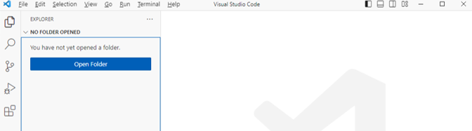
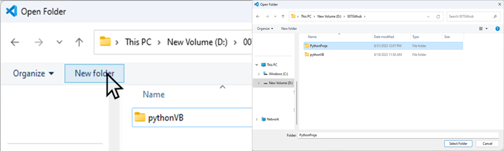
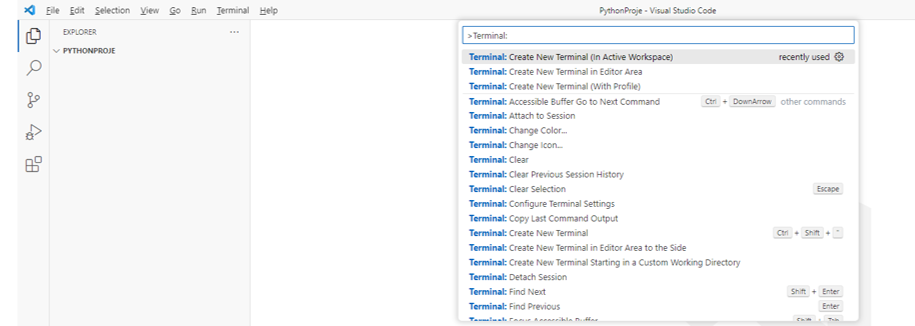
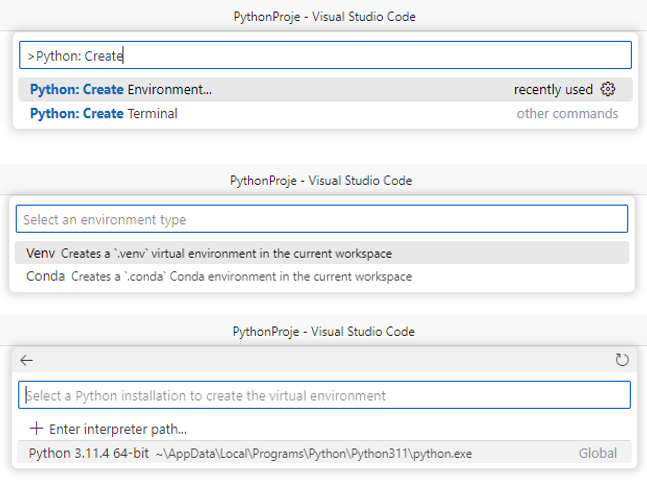

7. Modüller ve Nesne Yönelimli Programlama#
7.1. Modüller#
Python terminalini kapattığınız zaman yazdığınız kodlar ve çalışmalarınız da kaybolur. Bu nedenle terminalde uzun programlar yazmak çok kolay olmayabilir. Bunun için önceki bölümde aktarılan Python editörlerinden birini kullanmak daha uygundur. Bir Python editörü kullanarak yazdığınız kodları kaydedebilirsiniz. Yazdığınız programlar uzadıkça programı parçalara ayırmak da isteyebilirsiniz. Bazen, yazdığınız bir kod ya da fonksiyonu farklı programlarda kullanmak da isteyebilirsiniz. Bunun için kullanmak istediğiniz Python kodunu kaydedip her kullanışta dosyayı açmak ve yeni programın içine kopyalamak programlamayı gereksiz yere uzatacaktır. Bunun yerine modüllerden faydalanabiliriz. Python’da oldukça önemli bir yer tutan modüller sayesinde yazdığımız fonksiyonları yeniden yazmaya ya da bir programdan diğerine kopyalamaya gerek kalmadan tekrar tekrar kullanabiliriz.
Bir modülü kullanabilmek için önce import kelimesini kullanarak modülü program içine aktarmamız gerekir. Örneğin, birçok matematiksel fonksiyonu barındıran math modülünü kullanacağımızı düşünelim. Bunun için önce import math yazmamız gerekir. Bu şekilde, math modülündeki fonksiyonlar program içinde kullanılabilir hale gelir. Örneğin, math modülü içindeki faktöriyel fonksiyonunu kullanacağımızı düşünelim.
import math
math.factorial(4)
24
Yukarıda görüldüğü gibi bir modül içinde tanımlanmış olan bir fonksiyonu kullanmak için önce modül isminden sonra nokta getirilerek istenen fonksiyon adı yazılır. Bu, birçok nesne yönelimli programlama dilinde ortak bir özelliktir.
Birbirleri ile ilgili fonksiyonlar tekrar tekrar kullanılabilmek üzere bir araya getirilip kaynak kodu dosyası olarak kaydedilebilir. Bu dosyalar modül olarak isimlendirilir. Modüller, diğer modüllerin ya da programların içinde kullanılabilir. Kitabın ileri bölümlerinde Python’da modüllerin ne kadar önemli olduğunu göreceğiz. Python’un günümüzde bu denli popüler olmasının bir sebebi de geliştirilmiş olan çok çeşitli sayıda kullanışlı modüllerin varlığıdır.
Python için geliştirilmiş ve tüm Python programcılarının kullanımına sunulmuş çok sayıda modül vardır. Bu modüller paket olarak isimlendirilir. Paketler sayesinde, istediğimiz bir programı en baştan yazmak yerine daha önce geliştirilmiş hazır programları kullanabiliriz. Geliştirilmiş olan tüm paketleri Python kurulumu içinde yüklemek çok zordur. Python’u ilk kurduğunuzda sadece temel Python dağılımındaki fonksiyonları kullanabilirsiniz. Diğer yandan Python için geliştirilmiş çok sayıdaki paketi kullanmak için bunları önce kullanılabilir hale getirmeniz gerekir. En çok kullanılan paketler, bir kısmını bu kitapta da anlatacağımız, numpy, pandas, matplotlib, scikit-learn, scipy gibi paketlerdir.
Paket ya da modülleri import komutu ile kullanıma hazır hale getirebilmek için öncelikle bunları kurmuş olmamız gerekir. Python paketleri https://pypi.org/ ya da https://anaconda.org/anaconda/repo sayfalarından yayınlanır. Bir Python paketini terminal etkranında pip install ya da Anaconda platformu kullanıyorsanız conda install komutu ile kurabilirsiniz. Şimdi MS VSCode’da pip install ile paket kurulumunu adım adım görelim. Bunu yaparken, çalışmalarınızda prensip edinmenizi tavsiye ettiğim virtual environment (sanal ortam) kullanımını da göstereceğim.
Normalde, yeni bir paket kurduğunuzda, bu paket Python’un kurulu olduğu dizinde yer alır. Ve sonrasında bu paketi kullanmak istediğinizde import komutu paketi buradan çağırır. Ancak, birbirinden farklı özellik ve ölçeklerde projelerde çalışacaksınız. Her projenin paket gereksinimleri ayrı olacak. Tek başınıza çalıştığınızda bu çok da önemli olmayabilir ancak geliştirdiğiniz bir modelin canlı uygulamaya alındığını düşünün. Modelin hangi paketleri kullandığı, hatta bu paketlerin hangi versiyonlarının kullanıldığı gibi konular oldukça önem kazanacak. Bunların takibini kolaylıkla yapabilmek için her bir proje için yeni bir sanal ortam oluşturmak ve bu projeye ilişkin paketleri bu ortama kurmak size ileride çok fazla zaman ve kazanduracaktır. Bu nedenle, aşağıda anlatacağım adımları küçük ya da büyük her projenizde uygulamayı ve bunu alışkanlık haline getirmenizi tavsiye ederim.
7.1.1. Sanal Ortam Oluşturma ve Paket Kurma#
Şimdi yeni bir proje ve sanal ortam oluşturmaya başlayabiliriz. Öncelikle boş bir VSCode ekranı açalım.

Şimdi Open Folder butonuna tıklayarak yeni bir klasör oluşturalım. Oluşturacağınız proje klasörünün yer alacağı klasöre gittikten sonra yukarıda yer alan New Folder butonu ile yeni bir klasör oluşturun. Örneğimizde oluşturduğumuz projeye “PythonProje” ismini verdik.

Sonraki adımda Select Folder diyerek VSCode ekranına geri dönüyoruz.
Şimdi menüden Terminal –> New Terminal ya da Ctrl + Shift + P tuşlarına aynı anda bastıktan sonra yukarıda açılan ekrana Terminal: yazın ve seçenekler arasından Terminal: Create New Terminal (In Active Workspace) seçeneğine tıklayın.

Şimdi, tekrar Ctrl+Shift+P diyerek Python: Create Environment yazmaya başlayın. Sonra da çıkan seçenekler arasından Venv creates a '.venv' virtual environment in the current workspce ile devam edin. Son aşamada sizden bilgisayarınızda kurulu olan Python sürümleri arasından seçim yapmanız istenecektir. Bu adımdan sonra virtual environment kurulmaya başlar.

Kurulum tamamlandıktan sonra EXPLORER sekmesinde .venv isminde bir klasör oluşturulduğunu görürsünüz. Kuracağımız paketler, bu klasörün altındaki Lib klasörüne kurulacak. Şimdi, daha önce açtığımız terminal ekranına giderek aşağıdaki komutu yazın
PS D:\007Github\PythonProje> .\.venv\Scripts\activate
Terminal promptunun aşağıdaki şekilde değiştiğini göreceksiniz:
(.venv) PS D:\007Github\PythonProje>
Bu, kurduğumuz sanal ortamın (virtual environment) aktif hale geldiğini ve bundan sonraki komutlarımızın bu ortamda çalışacağını gösterir. Şimdi örnek bir paket kuralım. (.venv) promptu geçerliyken pip install matplotlib yazın. Bu komut, sanal ortama matplotlib paketini kuracaktır.
Kurulum tamamlandıktan sonra .venv\Lib klasöründe Matplotlib klasörünün oluşturulduğunu göreceksiniz.
7.1.2. Paketleri Kullanma#
Daha önce de belirtildiği üzere bir paketi kurduktan sonra, kullanabilmek için import komutu ve ardından paket ismi yazılır.
import numpy
Bir paketteki kullanılabilir fonksiyonları görmek için help(paket_adı) kullanılabilir.
Bir paketi içeri aktardıktan sonra bu pakette yer alan bir fonksiyonu kullanmak için önüne aşağıdaki şekilde nokta ve sonrasında paket ismi getirilmelidir. Örneğin, math paketinde yer alan log10() fonksiyonunu kullanmak istediğimizi varsayalım. Bu fonksiyonu tek başına log10(1000) şeklinde kullanırsak hata mesajı alırız. Bu nedenle fonksiyonu önünde paket ismi ile birlikte yani math.log10(1000) şeklinde kullanmalıyız.
import math
math.log10(1000)
3.0
Son olarak içeri aktardığımız modül veya fonksiyona yeni bir isim verip programda bu isimle kullanabiliriz. Bu şekilde fonksiyonun önüne paket ismi yazmamıza gerek kalmaz. Örneğin,
import math as mt
mt.log10(100)
2.0
Paketin içinden bir fonksiyonu sıklıkla kullanacaksak ve her defasında math. yazmak istemiyorsak aşağıdaki gibi from ... import ... formatını kullanabiliriz. Bu şekilde log10() fonksiyonunu tek başına da kullanabiliriz.
from math import log10
log10(100) + log10(1000)
5.0
Paketleri kendi istediğimiz isimlerle kullanabildiğimiz gibi paket içindeki fonksiyonları da aynı şekilde as kullanarak istediğimiz isimler kullanıma alabiliriz. Aşağıdaki örnekte, math paketi içindeki log10() fonksiyonunu lg olarak kullanıoruz.
from math import log10 as lg
lg(10) + lg(100)
3.0
Özetlemek gerekirse, bir modülü içeri aktarmak için import modül kalıbını kullanıyoruz. Modül içinden istediğimiz fonksiyonu içeri aktarmak içinse from modül import fonksiyon yazıyoruz. Son olarak modül ya da fonksiyonu kendi istediğimiz bir isimle içeri aktarmak için import modül as isim ya da from modül import fonksiyon as isim kalıplarını kullanıyoruz.
Aslında bir modül, Python kodlarından ve tanımlarından (fonksiyon) oluşan .py uzantılı bir dosyadan başka bir şey değildir. Siz de sık kullandığınız fonksiyonları .py uzantılı bir dosyada kaydederek daha sonra farklı programlarınızda bu modülü içeri aktarıp içindeki fonksiyonları kullanabilirsiniz. Örneğin aşağıdaki gibi çok basit bir modül oluşturalım.
def kare_al(x):
return x ** 2
def kup_al(x):
return x ** 3
def kok_al(x):
return x ** 0.5
def us_al(x,y):
return x ** y
Yukarıdaki modülü usal.py olarak kaydedelim. Bir başka programın içinde yukarıdaki fonksiyonları kullanmak istersek aşağıdaki şekilde import ile birlikte kullanabiliriz.
import usal
usalma.kare_al(5)
usalma.kup_al(4)
usalma.us_al(5,3)
usalma.kok_al(16)
7.2. Nesneler ve Sınıflar#
Programlama tarihsel olarak belirli girdilerin alınıp, önceden tanımlanan işlemlere tabi tutulduktan sonra çıktıların üretildiği doğrusal bir süreç olarak geliştirilmiştir. Bu süreci bir fabrikadaki üretim tek bir üretim bandı gibi de düşünebiliriz. Bu tip programlamada süreç; girdi, fonksiyon, çıktı sırasıyla ilerlediği için bu şekildeki programlama “fonksiyonel programlama” olarak da isimlendirilir. Fonksiyonel programlama, birçok uygulamada çok faydalı olmakla birlikte her uygulamada yeterli olmayabilir. Özellikle çok büyük ölçekli programlarda yapılmak istenen işi küçük parçalara bölüp gerçekleştirmek tercih edilebilir. Bu durumda veri ve fonksiyonları, nesne adı verilen bir paketin içinde birleştirebiliriz. Nesne yönelimli programlama, bu ihtiyaçtan doğmuştur. Bu yöntemle, tekrar tekrar kullanılabilir programlar üretmek de mümkündür.
Nesne yönelimli programlama, fikrini gerçek hayatta etrafımızda gördüğümüz nesnelerden ve sınıflardan almaktadır. Konuyu daha iyi anlayabilmek için programlama kitaplarında en çok kullanılan bir örnekten alıntı yapmak istiyorum [DD15, DD16, Mat15]. Bir otomobilin üretilebilmesi için önce çizim planlarının olması gerekir. Şüphesiz, çizim planları otomobilin kendisi değildir. Ancak, işi bilen birisi otomobilin çizim planlarına bakarak bir araba yapabilir. Arabanın gaz pedalı, freni ve direksiyonu vardır. Arabayı hızlandırmak isteyen sürücü gaz pedalına basarak motora bir komut verir. Sürücünün bunu yaparken motorun nasıl çalıştığını, gaz pedalının hangi motor parçalarını harekete geçirdiğini bilmesine gerek yoktur. Sadece gaz pedalına basmanın arabayı hızlandıracağını bilir. Nesne yönelimli programlamada bu işleme metod denir. Örneğin, önceki modülleri anlatırken usalma isminde bir modül ve bu modülde kup_al() isminde bir fonksiyon yazdık. Bu fonksiyonu çağıran kullanıcının sadece fonksiyonun işlevini bilmesi yeterlidir. Fonksiyon içindeki kodları bilmesine gerek yoktur.
Otomobil örneğine geri dönecek olursak, bir defa otomobilin teknik çizimlerini (otomobil sınıfını) oluşturduktan sonra bu çizimlere bakan bir usta yeni bir otomobil nesnesi yapabilir. Üretilen her yeni otomobil nesnesinin gaza basma, frene basma, direksiyonu çevirme gibi ortak metodları olacaktır.
Nesnelerin metodları dışında, özellikleri de vardır. Örneğin hepsi aynı sınıfta olsa da her otomobilin, renk, kapı sayısı, motor büyüklüğü gibi farklı özellikleri vardır. Programlamada da yeni oluşturulan nesnelerin, ait oldukları sınıfa ait özelliklerini tanımlayabiliriz.
Özetleyecek olursak nesne yönelimli programlamada önce sınıfları (class) tanımlarız. Daha sonra bu sınıfa ait istediğimiz kadar farklı nesne (object) tanımlayabiliriz. Bir nesne başlangıçta, ait olduğu sınıfın genel özelliklerini taşır. Ancak daha sonra nesneleri, özelliklerini değiştirerek farklılaştırabiliriz. Sınıflar ve nesneler, nesne yönelimli programlamanın en önemli iki tarafıdır. Bir kez nesnelerle düşünmeye alıştığımız zaman her şeyi sınıf ve nesne çerçevesinden görebiliriz. Örneğin, tamsayıları int sınıfına, metinleri de string sınıfına ait nesneler olarak görebiliriz. Nesneler kendilerine ait alan adı verilen değişkenlerde veri tutabilir, metod adı verilen fonksiyonlar ile sadece o sınıfa ait işlemler gerçekleştirebilir.
Bir banka için müşteri hesapları programı yazdığımızı düşünelim. Önce müşteri hesabı sınıfı oluşturmamız gerekir. Bir müşteri hesabına ait hangi özellikler olabilir? Müşteri numarası, müşterinin adı, soyadı, hesap açılış tarihi, hesabın açıldığı para birimi, hesap bakiyesi akla gelen ilk özellikler. Diğer yandan bir hesapta para çekme, para yatırma ve hesap kapatma gibi metodlar olabilir.
Şimdi örnek uygulama olarak Python’da bir banka hesabı programı yazalım. Önce bir banka hesabı sınıfı oluşturmamız ve istediğimiz özellik ve metodları tanımlamamız gerekiyor. Bir defa bunu yaptıktan sonra istediğimiz kadar banka hesabı oluşturup bunlarla istediğimiz işlemleri yapabiliriz. İşlemi basit tutalım ve sadece üç özellikle başlayalım: hesap no, hesap sahibi ve açılış tutarı.
class Banka_Hesabi():
""""Banka hesap programı """
def __init__(self, hesap_no, hesap_sahibi, tutar):
"""Yeni açılan hesaba gerekli değerleri atar"""
self.hesap_no = hesap_no
self.hesap_sahibi = hesap_sahibi
self.tutar = tutar
def para_cek(self, cekilen):
self.tutar -= cekilen
def para_yatir(self, yatan):
self.tutar += yatan
Artık bildiğimiz gibi bir sınıfa ait olan fonksiyonu metod olarak isimlendiriyoruz. Metodlar da fonksiyonlar gibidir ancak çağrılma şekilleri farklıdır. Yukarıdaki kodlar arasında sadece __init__() ifadesini ilk defa görüyorsunuz. Bu metod, sınıfa ait bir nesne oluşturmak için kullanılır. Yeni bir banka hesabı açtığımızda yani programlama diliyle söyleyecek olursak yeni bir banka_hesabı nesnesi oluşturduğumuzda bu nesnenin hangi özelliklere sahip olacağını __init__() metodu belirler. Bu metodu kullanılan diğer metodlardan ayırmak için init ifadesinin önüne ve sonuna iki alt çizgi getirilir.
İlk defa gördüğümüz bir başka ifade de kendisi anlamına gelen self anahtar kelimesidir. Diğer programlama dillerini kullananlar için Python’daki self ifadesi C, C++ ve Java’daki this ifadesine karşılık gelir. Sınıf metodlarının normal fonksiyonlarından farkı, bunları yazarken ilk önce self anahtar kelimesine yer verilmesi gereğidir. Ancak daha sonra metod çağrıldığında self argümanı için bir değer atamaya gerek yoktur çünkü self zaten oluşturulan ya da kullanılan nesnenin kendisini ifade eder. Aslında burada mutlaka self kelimesini kullanmak zorunda değiliz. Bunun yerine herhangi bir kelime kullanılabilir. Ancak, farklı kullanıcıların ve kodlama ortamlarının self kelimesini tanıması açısından self anahtar kelimesinin kullanılması tavsiye edilir.
Tekrar yukarıdaki koda dönelim. Yeni bir hesap açacağımız zaman, hesap_no, hesap_sahibi ve tutar bilgilerini de girmemiz gerekir. Yukarıdaki kodu farklı bir dosya olarak kaydedip daha sonra farklı dosyalardan import komutu ile kullanabiliriz.
Dosyayı banka_hesapları.py adıyla kaydettiğimizi varsayalım. Yeni bir hesap nesnesini Banka_Hesabi() fonksiyonu ile oluşturuyoruz. Burada self argümanını kullanmamıza gerek yok ancak kendi tanımladığımız argümanlara ait değerleri iletmemiz gerekiyor. Self değişkeninin bir özelliği de şudur: bu değişken, sınıftaki bütün metodlar tarafından ulaşılabilir olur. Yani yeni oluşturduğumuz nesneye, sınıf tanımında yer alan para_cek() ve para_yatir() metodlarını uygulayabiliriz. Normalde hesaptaki tutarın eksi değer alamayacağını biliyoruz. Bunu basit bir if koşulu ile kontrol etmek mümkündür ancak örneği basit tutmak adına şimdilik bu durumu göz ardı edelim.
from banka_hesaplari import Banka_Hesabi
hesap_001 = Banka_Hesabi(1, "İlker Arslan", 100)
print(hesap_001.hesap_no)
1
print(hesap_001.hesap_sahibi)
İlker Arslan
Şimdi de para çekme ve para yatırma metodlarını uygulayalım.
hesap_001.para_cek(50)
print(hesap_001.tutar)
50
hesap_001.para_yatir(180)
print(hesap_001.tutar)
230
Tıpkı fonksiyonlarda olduğu gibi nesne tanımlarında da özelliklere varsayılan değer atayabiliriz. Örneğin, yeni açılan bir hesaba tutar bilgisi girilmemişse, varsayılan değer sıfır olsun. Bunun için tanım satırında
def __init__(self, hesap_no, hesap_sahibi, tutar=0):
yazmamız yeterlidir. Böylece, yeni bir hesap oluşturulduğunda tutar bilgisi girilmemişse, varsayılan değer olan sıfır atanacaktır.
Benzer sınıflar oluştururken her zaman bütün kodları en baştan oluşturmamıza gerek olmayabilir. Örneğin bir otomobil sınıfı oluşturduğumuzu düşünelim. Daha sonra bunun bir alt sınıfı olan elektrikli otomobil oluşturmamız gerekebilir. Bu durumda otomobil için tanımlanmış bütün özellik ve metodlar elektrikli otomobil için de kullanılacak, elektrikli otomobil için ilave özellik ve metodlar tanımlanacaktır. Bu nedenle elektrikli otomobil sınıfının gerekli özellikleri ve metodları doğrudan otomobil sınıfından almasını sağlayabiliriz. Nesneye yönelik programlamada buna miras alma (inheritance) denir. Şimdi banka hesabı örneğinde devam edelim. Bu defa bir banka hesabının bir alt sınıfı olan kredili banka hesabı sınıfı oluşturalım. Kredili banka hesabının normal banka hesabından fazla olarak kullanılabilir kredi limiti ve kalan kredi limiti gibi özellikleri olsun.
class Kredili_Hesap(Banka_Hesabi):
"""Kredi limiti olan hesap"""
def __init__(self, hesap_no, hesap_sahibi, limit, tutar=0):
super().__init__(hesap_no, hesap_sahibi, tutar)
self.limit = limit
İlk satırda Kredili_Hesap(Banka_Hesabi) ifadesiyle, kredili hesap sınıfının, banka hesabı sınıfının bir alt sınıfı olduğunu belirtiyoruz. Daha sonra üst sınıftan miras almasını istediğimiz özellikleri de super().init() komutu ile belirtiyoruz. Ancak ilave olarak bir limit özelliği tanımlıyoruz. Yukarıdaki tanımlamada dikkat etmemiz gereken bir nokta var. Varsayılan değer alan özellikleri en sona yazmamız gerekiyor. Yukarıda varsayılan değeri olmayan limit özelliğini, tutar=0 ifadesinden sonra yazarsak hata mesajı ile karşılaşırız.
Kredili hesapta normal hesaptan farklı olarak bir de kalan limit özelliği yer alsın. Şimdi hesaptan para çekilmek istendiğinde müşterinin yeterli limiti olup olmadığı kontrol edilsin ve ancak yeterli limit varsa para çekilmesine izin verilsin. Aksi halde müşteriye yeterli bakiye olmadığına dair mesaj gösterilsin.
Kredili Hesap sınıfında para_cek() metodunu aşağıdaki şekilde tanımlıyoruz. Burada ana sınıftaki bir metodu değiştirdik. Alt sınıfta, ana sınıfa ilave özellikler ve metodlar tanımlayabileceğimiz gibi burada yaptığımız gibi ana sınıftaki metodları değiştirmek de mümkündür.
def para_cek(self, cekilen):
if self.kalan_limit - cekilen > 0:
self.tutar -= cekilen
self.kalan_limit -= cekilen
else:
print("Yeterli kredi limitiniz bulunmamaktadır!\n")
print("Kullanılabilir limitiniz: " + str(self.kalan_limit))
Şimdi bir Kredili_Hesap() nesnesi oluşturalım ve birkaç para çekme işlemi yapalım.
kredi_hesabi_001 = Kredili_Hesap(hesap_no=2, hesap_sahibi="Eren Arslan", limit=500)
kredi_hesabi_001.limit
500
kredi_hesabi_001.kalan_limit
500
kredi_hesabi_001.tutar
0
kredi_hesabi_001.para_cek(150)
kredi_hesabi_001.tutar
-150
kredi_hesabi_001.kalan_limit
350
kredi_hesabi_001.para_cek(400)
Yeterli kredi limitiniz bulunmamaktadır! Kullanılabilir limitiniz: 350
Gerçek hayatta nesneler çok daha karmaşık olabilir. Daha çok ayrıntıya girdikçe bir sınıftaki özellikler ve metodlar artacaktır. Örneğin, bir arabayı modellemeye çalışırken motorların da sınıf özelliği gösterdiğini fark ederiz. Bu durumda ayrı bir motor sınıfı oluşturup otomobil sınıfı içinde motor sınıfına ait nesne oluşturabiliriz. Banka hesabı örneğimizi düşünecek olursak bir müşteriler ve hesaplar için farklı sınıflar oluşturmak daha mantıklı olabilir. Böylece bir müşteri nesnesi oluşturduğumuzda buna bağlı farklı hesap nesneleri de oluşturmamız mümkün olur. Şimdi buna uygun bir örnek yazalım.
class Hesap():
def __init__(self, hesap_no, hesap_sahibi, tutar=0):
self.hesap_no = hesap_no
self.hesap_sahibi = hesap_sahibi
self.tutar = tutar
def para_cek(self, cekilen):
self.tutar -= cekilen
def para_yatir(self, yatan):
self.tutar += yatan
class Musteri():
def __init__(self, musteri_no, adi, dogum_tarihi):
self.musteri_no = musteri_no
self.adi = adi
self.dogum_tarihi = dogum_tarihi
self.hesap1 = Hesap(12345, adi)
musteri_1 = Musteri(1111, 'ilker arslan', '27.11.1977')
musteri_1
<__main__.Musteri at 0x2217f85e490>
musteri_1.musteri_no
1111
musteri_1.adi
'ilker arslan'
musteri_1.dogum_tarihi
'27.11.1977'
musteri_1.hesap1.hesap_no
12345
musteri_1.hesap1.hesap_sahibi
'ilker arslan'
musteri_1.hesap1.tutar
0
musteri_1.hesap1.para_yatir(1250)
musteri_1.hesap1.tutar
1250
Artık hem modüllerin çalışma mantığını hem de nesne yönelimli programlama mantığını temel olarak kavramış bulunuyoruz.
7.3. Alıştırmalar#
Bir çalışan sınıfı oluşturun. Çalışanın özellikleri isim, işe giriş tarihi, görevi ve maaşı olsun. Toplam çalışan sayısını gösterecek bir değişken oluşturun. Yeni bir çalışan oluşturulduğunda çalışan sayısı bir artsın. Çalışan için çalışan bilgilerini gösteren ve maaşına istenen tutarda zam yapan iki metod yazın.